ALL 2.5D 84 Type Character Pack: 1.0ALL 2.5D 84 Type Character Pack (size: 10.3Mb) version: 1.0
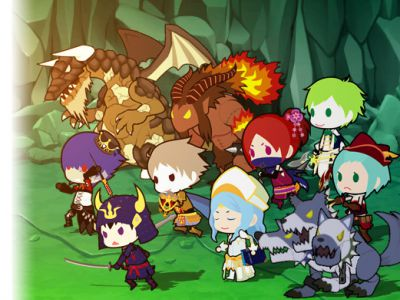
Description
Price: $49.00.
Publisher: Parabolica Co., Ltd..
Description:2.5D Character Series all assortment was
Of all the 84 bodies is character pack.
Since the move in 3D space, in the Tower de fence and side-scrolling action game, etc.,
Please use.
●●●●●●●●●●
Game using this character is also in the public,
Also because it supports mobile,
Please check all means.
[Android Download]
[iOS Download]
●●●●●●●●●●
●●●●●●●●●●
Other 2.5D Pack Series also Best regards! !
2.5D basic character pack
2.5D monster pack
2.5D Archer pack
2.5D witch pack
2.5D Dragon pack
2.5D warrior pack
2.5D lance Tsukai pack
2.5D Monk & Priest & diva pack
2.5D spirits pack
2.5D Ninja & Thief pack
Recommend pack was assortment all the characters! !
ALL 2.5D character pack
●●●●●●●●●●
■ animation list
- Idle
- Walk,
- Run,
- Attack,
- Skill,
- Die,
■ character list
Farmers
Barbarian
Amazones
Warrior × 5 type
Knight × 3 types
Warrior
Samurai
Ninja
Kunoichi
Thief × 3 types
Archer
Sniper
Bomber × 2 types
Princess
Prince
Dancer
Costume nurse × 2 types
Sorcerer × 5 type
Monk × 2 types
Paladin
Witch × 7 type
Monk
Diva & magician × 3 types
Priest & pharmacist × 3 types
Necromancer × 2 types
Ifrit
Nome
Jin
Sylph
Zonbisu × 2 types
Kelton × 2 types
Skeleton Rifleman × 2 types
Goblin × 3 types
Golem × 3 types
Cerberus
Minotaur
Troll
Dragon × 5 type
Extra Images
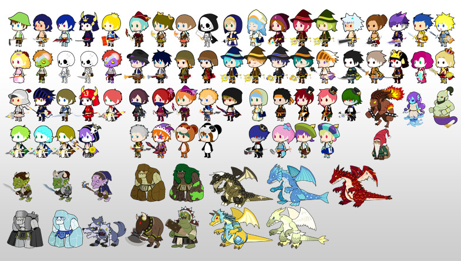
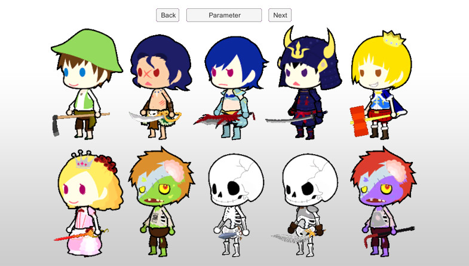
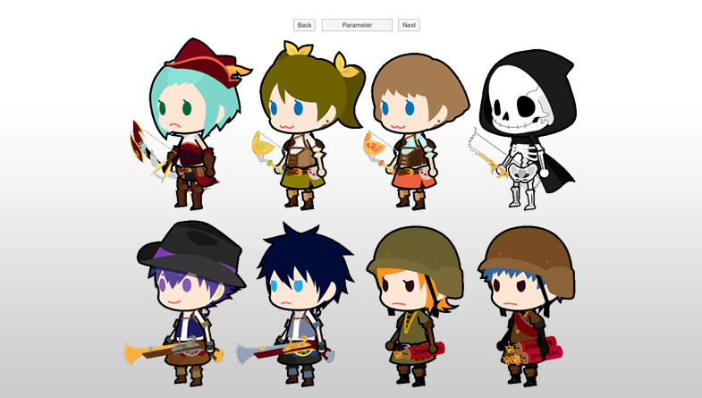
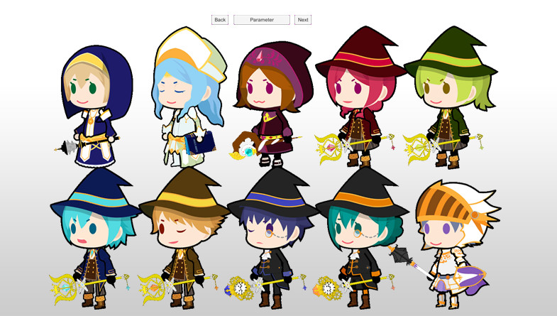
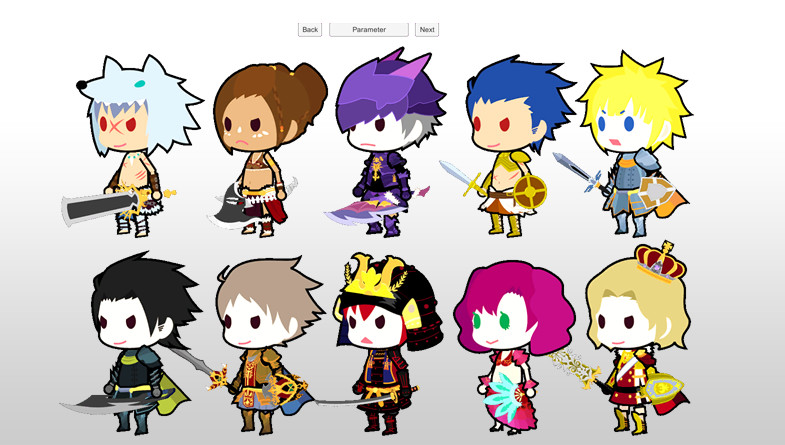
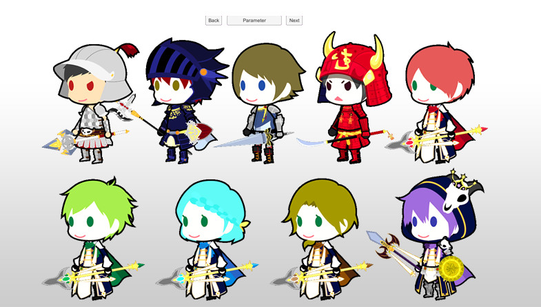
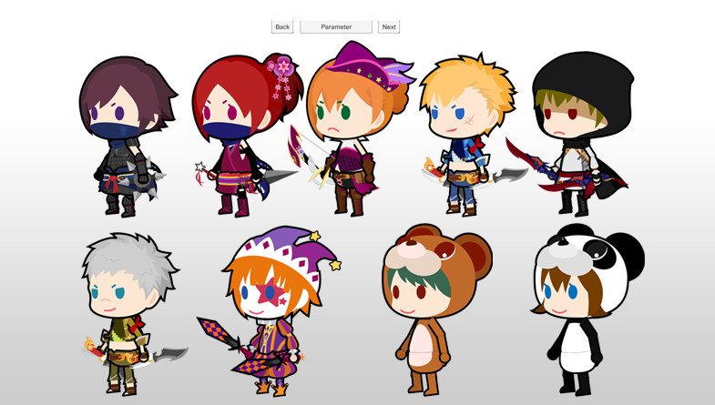
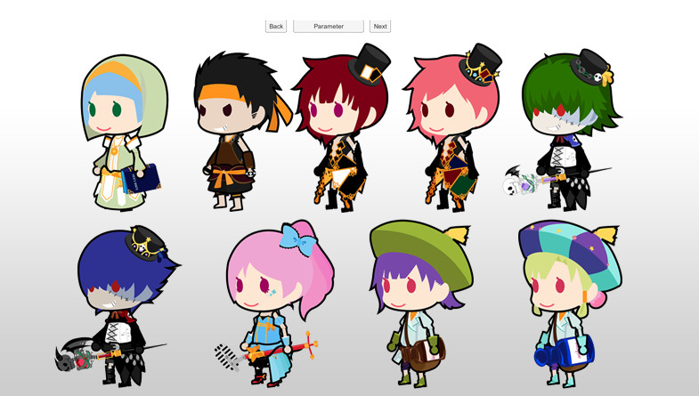
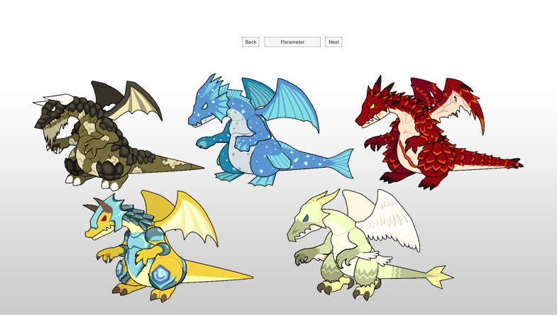
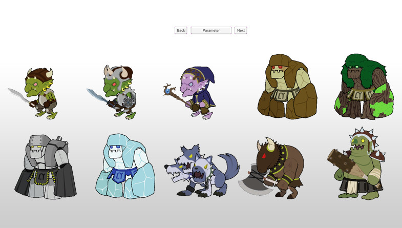

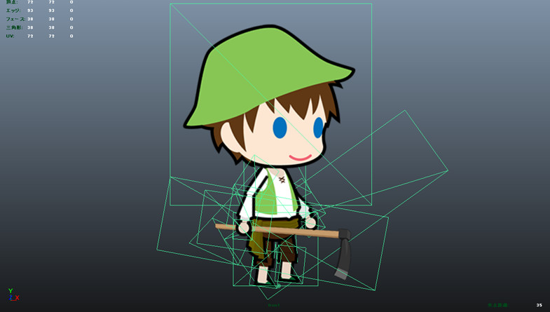